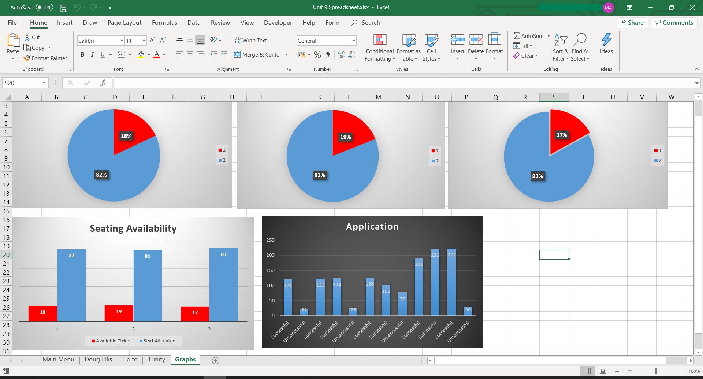
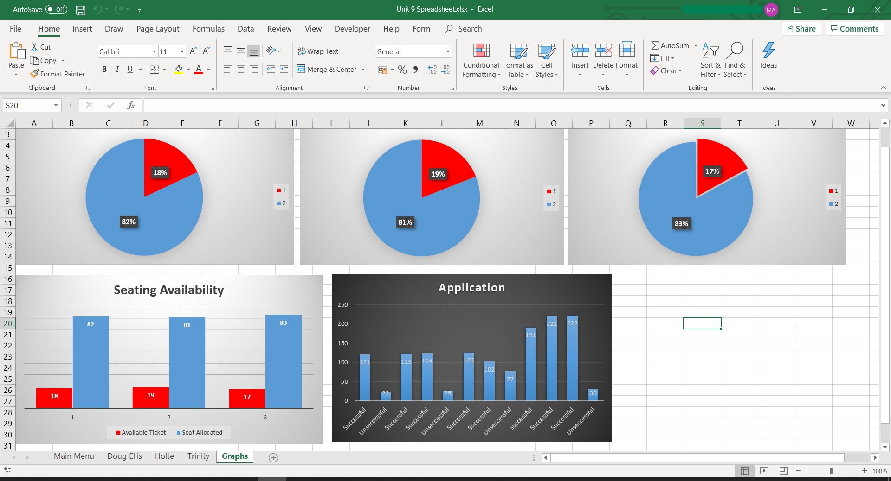

Unit 9-Spreadsheet Development
  
This unit helps me to design a fully working spreadsheet for a football club and to allow us to see the tickets that have been sold and the availability of tickets. Analysing a spreadsheet using Pie chart and to help us understand the data of tickets that have been sold and the availability of tickets as well as the seating availability. Spreadsheets are used extensively in many organizations to help people carry out their job roles. For instance, accountants use spreadsheets to keep track of the money going into and out from a business, and scientists use them to analyze the results of their experiments and record the data for use in the future. | Learning aims in this unit you will:
|
 Please click here to see my work |